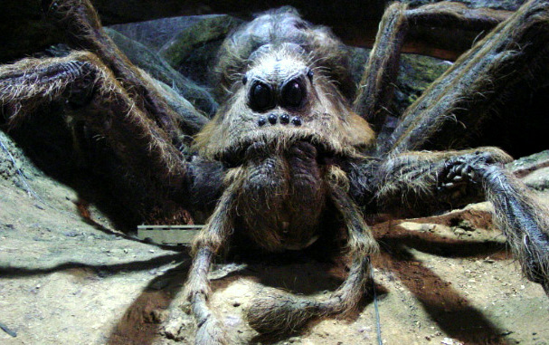
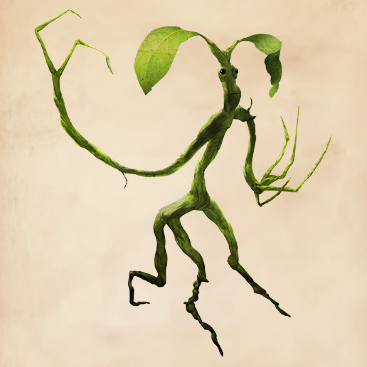
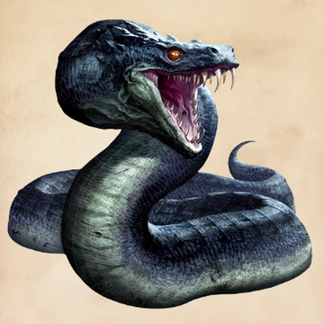
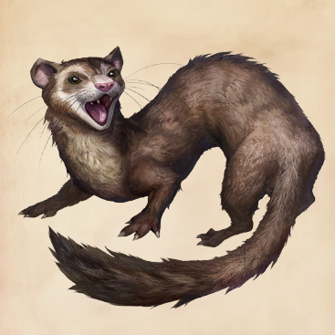
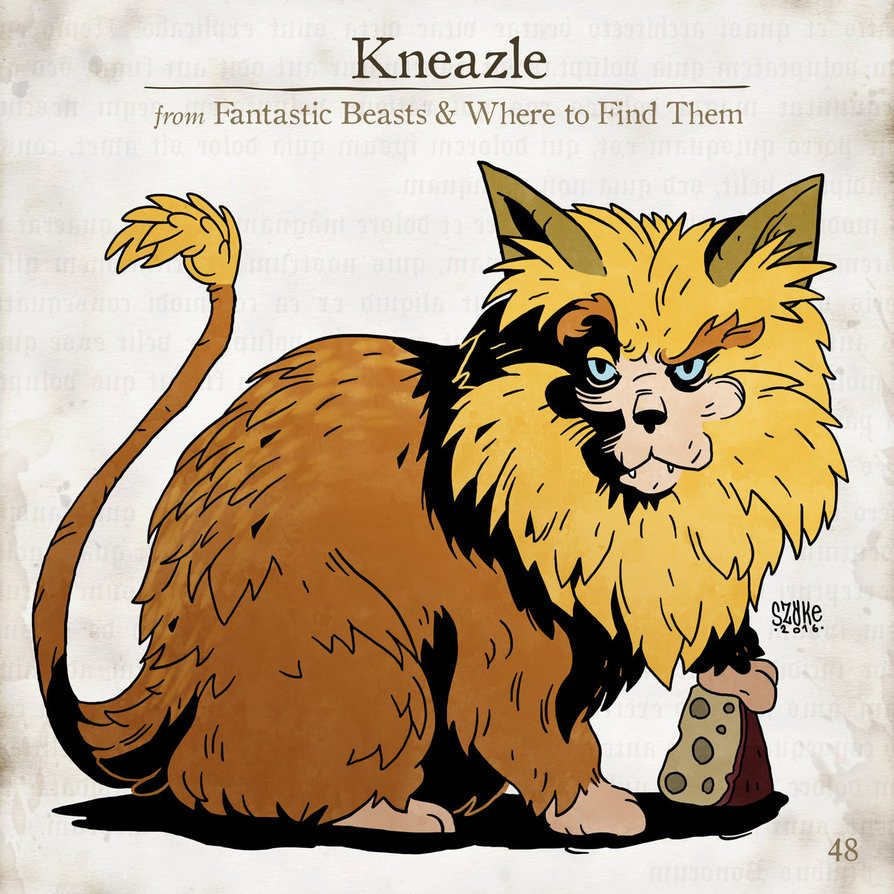
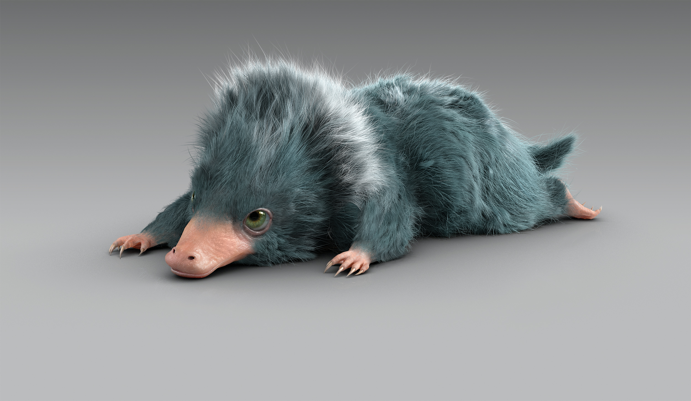
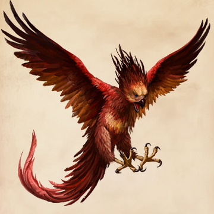
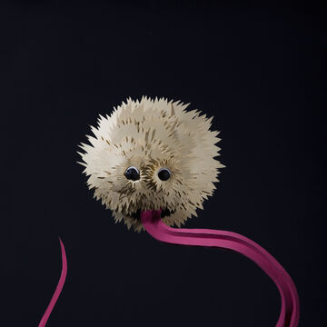
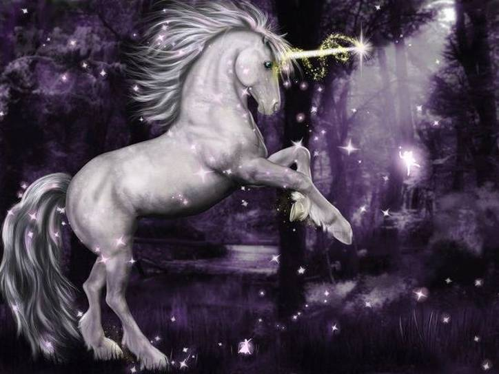

Mythical Creatures
Some of these creatures are specific to the Harry Potter universe, while others are universal mythological creatures. Here are examples of some of them that appear throughout the series itself and in the wizarding world textbook, "Fantastic Beasts and Where To Find Them".
Dragons

Dragons are very common fantasy creatures that also exist in the Harry Potter universe. The Harry Potter series has its own kinds of dragons, such as the Hungarian Horntail (pictured above). In the series, Harry had to fight one of these in the Triwizard Tournament.
Acromantula
The acromantula is basically a giant tarantulla. Rubeus Hagrid (a professor at Hogwarts) had a pet acromantula named Aragog. Aragog lived in the Forbidden Forest on Hogwarts grounds with his family.
Bowtruckle
Bowtruckes are small stick-like creatures (they're kind of like stick bugs). They aren't super agressive in general, but they will defend the tree they attach to. Newt Scamander has a bowtruckle named Picket who attaches to him.
Basilisk
The basilisk is another creature that isn't just found in the Harry Potter series. In the Harry Potter universe, Salazar Slytherin (one of the Hogwarts founders) had a basilisk he hid in the Chamber of Secrets. His plan was to rid the school of muggleborns. The basilisk was later killed by Harry.
Crup

The crup has the appearance of a terrier with a forked tail. It also behaves pretty similarly to a dog and can be kept as a pet in the wizarding world.
Jarvey
The jarvey has the appearance of a ferret, although it's a bit larger than a normal ferret. It can also speak a few human words, although it can't really form coherrent sentences.
Kneazle
The kneazle looks quite like a cat with a lion tail and main. They can also cross breed with regular cats and can be kept as pets. However, they do act a bit wilder than normal cats, but they're very intelligent and can be very loyal to their owners if raised right.
Niffler
The niffler looks like a platypus. They can also be kept as pets, although they can be quite hard to handle, as they go after shiny things and can be very crazy about them. Newt Scamander has a niffler.
Phoenix
The phoenix is also common in fantasy settings. When they die, they become reborn from their ashes. Dumbledore has a phoenix.
Puffskein
Puffskeins (or Pygmy puffs) are also a common pet. They appear to be big fluff balls. Ginny Weasley has a puffskein named Arnold.
Thestral

Thestrals can only be seen by people who have seen death. They're said to bring terrible misfortune, although this is just a myth, as they are actually quite docile creatures. Some notable characters who can see thestrals are Harry (after he saw Cedric die) and Luna Lovegood (who saw her mon die).
Unicorn
Unicorns are also popular fantsy creatures. In Harry Potter, the unicorn foal take a golden color, and when they grow up, they become silver.